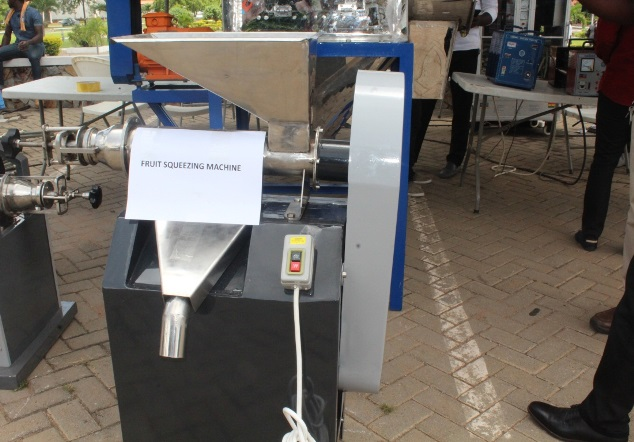

INSTITUTE OF APPLIED SCIENCE AND TECHNOLOGY 3RD INDUSTRY-ACADEMIA INTERACTION SERIES
INSTITUTE OF APPLIED SCIENCE AND TECHNOLOGY 3RD INDUSTRY-ACADEMIA INTERACTION SERIES (IAIS)
The Institute of Applied Science and Technology has organized its 3RD Industry –Academia Interaction Series on the 27th of April, 2017 at the Centre for Wetlands Auditorium. The Director of the Institute, Prof. George Oduro Nkansah, in his welcome address stated that the Institute of Applied Science and Technology was established in 2012 to spearhead the transfer of knowledge, technology and innovation developed at the University to industry and communities and one way to achieve this objective is through consistent interactions and industry needs assessment. He indicated that the 3rd Industry-Academia Interaction was aim of facilitating engagements between industry and academia that to promote research in areas of industrial or national interest. He welcomed the speakers, industry and academia and students and encouraged all participants to remain seated to the end of the programme.
Prof. George Oduro Nkansah delivering the welcome address
The Chairman and guest speaker, Prof. Ebenezer Oduro Owusu, Vice Chancellor- University of Ghana, in his speech which was on the theme for the programme dubbed “Making Industry and University Partnership Work” stated that Industry-Academia partnerships were now offering potentially powerful alternative to firms in today’s competitive environment. He indicated that most of partnerships in the past did not work as a result of lack of trust, intellectual property issues and some other factors. He, however, informed the gathering that 70% of the courses run by the University were in the sciences and only 30% were in other areas. He assured industry players that University has the relevant technologies, research and qualified research faculty to partner industry to address important challenges in industry. He also informed the participants that the University currently has in place adequate mechanisms such as intellectual policy and MOUs to guide any collaboration with regard to the transfer of innovations and technologies. He concluded by reiterating that the University’s readiness to work in tandem with the industries to become a powerful engine for innovation and economic growth.
The Vice Chancellor of UG, Prof. Ebenezer Oduro Owusu, delivering his speech
The next session was a presentation on “Automation Technology in Food Production” by Mr. Ebenezer Hammah, Founder of McHammah Engineering Limited. In his presentation, he stated that during the ancient times, the use of labour was able to provide food for the small population but currently looking at the rapid population growth rate, there is the need for large food production. He added that just labour specialization cannot meet the food demands of the current mass population but technology has made industries more automated to meet these food challenges. He opined that the food industry is currently the fastest growing segment for plant automation and that is why Mchammah was into food and agricultural processing equipment. He also stated that automation reduces labour, increases productivity, quality and profitability. In conclusion, he added that as the food processing industry continues to remain competitive in an ever expanding global market, there is the need for technological advances that will lead to increasing productivity, better product quality with enhanced safety assurance and lower cost in production.
Mr. Ebenezer K. Hammah, C.E.O of Mchammah Engineering Ltd., making a presentation
The next presentation was by Nana Kwadwo Safo Junior, C.E.O of Kantanka Group, on the topic “Industry and Academia: the Missing Link”. In his presentation, he said that academia and industry are supposed to be related because researches done in academia are translated into marketable products in the industries. He added that in Ghana, there is a distant relationship between academia and industry and this is a major factor affecting the development of Ghana and Africa as a whole. He stated that the time has come for academicians to sell out their researches and find solutions to some problems of the industries.
The C.E.O of Kantanka Group of Companies, Nana Kwadwo Safo Junior, during his presentation
The next presentation was by the C.E.O of Gratis Foundation, Mr. Emmanuel Asiedu, on the topic “Impact of Academia on Industry”. Mr. Asiedu said there has been some impact of Academia on Industry but it is very minimal. He explained that most industries in the country are manned by graduates from the various tertiary institutions but in terms of innovations and designs, their contribution is very low. He explained that this is due to lack of technology, lack of technical skills and knowledge, lack of committed resources from government and industry and inability to explore our natural resources. He added that for academicians, the educational system is theory oriented and normally students place more emphasis on passing exams than acquiring technical and career skills. He recommended that the University should organize workshops and practical sessions for their students regularly, collaborate with industries during the design of their course structure and also the creation of well-equipped resource centres for academia.
Mr. Emmanuel Asiedu, C.E.O of Gratis Foundation, making his presentation
Prof. Emmanuel Y. H. Bobobee, Senior Lecturer –Department of Agriculture (KNUST), presented on “Role of innovation and Intellectual Property in the knowledge economy”. He said that Sustainable Development Goal 9 talks about the building of resilient infrastructure, promoting inclusive and sustainable industrialization and fostering innovations. He said that one innovation is the invention of the mechanical cassava harvester at KNUST which takes 1sec/plant to dig out compared to 5min/plant manually. He informed the audience that there will be the introduction of “Masters of Intellectual Property” degree program at KNUST that aims to strengthen the education on Intellectual Property Rights matters in Africa.
Prof. Emmanuel Y. H. Bobobee, Senior Lecturer- Agric Eng. Dept. (KNUST), making a presentation
During the interactive session, Mr. David Tetteh, formerly of CSIR, said that a lot has been said about the industries and production but the missing link is how natural resources are exploited to produce the raw materials rather than importing them. Prof. Bobobee replied that normally the cost involved in extraction and conversion of the natural resources into the raw materials is quite expensive as compared to when importing them but using our natural resources is a key point to consider.
A participant making his submission during the interactive session
Dr. Lucas Damoah of Department of Materials Science Engineering shared a personal experience that, he has tried contacting some industries but most often the industries do not open up and even getting the contact of the right person to talk to becomes a challenge. A participant stated that graduates are not to be blamed for not acquiring technical skills for the job market because the opportunities to get involved in the practical sessions are not made available to them. Mr. Emmanuel Asiedu added that the University should create more workshops for students and make practical sessions a core part of the assessment of students. He said there is the need for the availability of funds to achieve this purpose, so the government should allocate more funds into tertiary education.
The C.E.O of Private Enterprise Federation, Nana Osei Bonsu, admonished both industry and academia to stop the lamentations and criticisms but focus on how to collaborate to provide solutions industry needs. He also indicated that the academia has been too theory-oriented and need to change this scheme to have some practical sessions. He explained that if students were trained for industry, then there is the need to dialogue with the industry to ask for what they want in these employees.

Nana Osei Bonsu, CEO of Private Enterprises Federation making a submission
Prof. Sefa Deddeh contributed that, a lot of these suggestions have been raised in similar interaction series like this, but he is challenging the upcoming graduates to change their way of thinking. He added that they should come up with innovative ideas rather than always looking to be employed by government or industries after graduation. Prof. Sackey, a former director of the Institute, in his submission said that until some scientists join the policy makers in parliament, then the points and suggestions raised during the interactive sessions will be very difficult to be implemented.
In the closing address, the Director of the Institute stated that all suggestions raised during the interactions have been noted and would be considered for better industry-academia partnerships. He added that some steps like industrial visits and the signing of MOUs with the industries have been initiated already. He stated that the Institute has organized workshops where they invited industry players lectures and were hoping to put up prototypes from the industry so that student can have hands-on training. In conclusion, he thanked the speakers, academia, representatives from industry, the student community and all those who made it a point to attend the interaction series.
There were exhibitions by Mchammah Engineering Ltd., Kantanka Group, Gratis Foundation and Academia. Some of the machines exhibited were the sanitary pad making machine, the fufu machine, the mechanical cassava harvester, Kantanka car, the 3-phasemetering system with a smoke detector, the sifter and the fruit squeezing machine.

Products of Mchammah Engineering Ltd. - The Sifter (left) and the Fruit squeezing machine (right)

The Fufu machine (by Gratis Foundation) in operation
The mechanical cassava harvester produced by Prof. Emmanuel Bobobee (KNUST)

A Kantanka automatic changeover transformer and a Kantanka 4-wheeled drive car